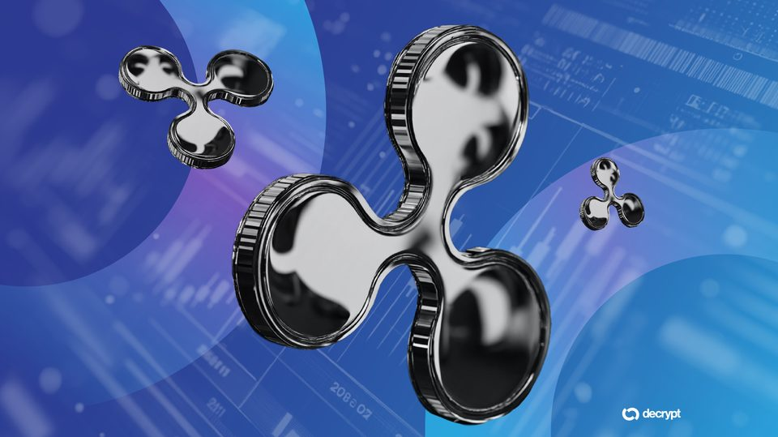
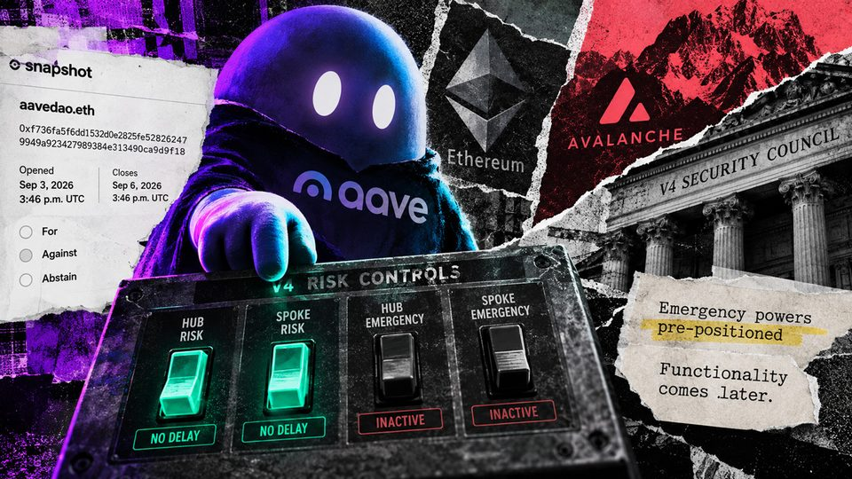
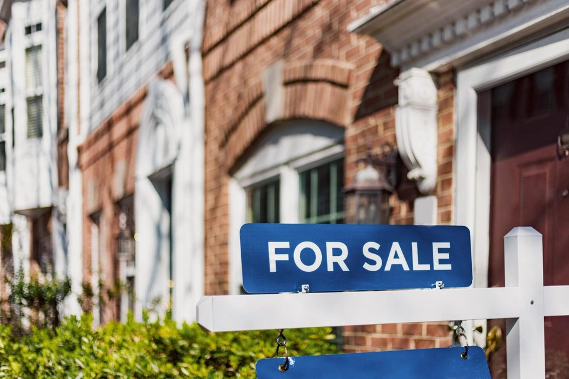
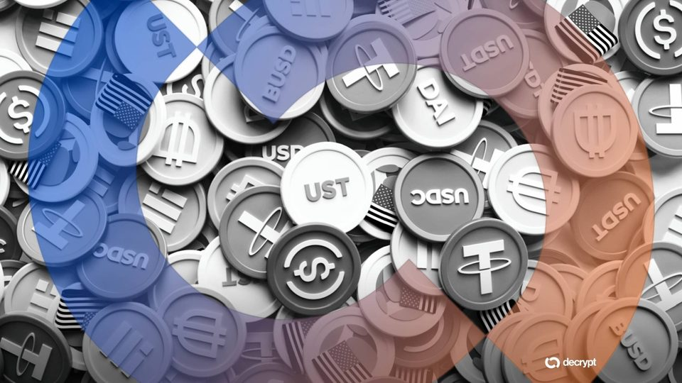
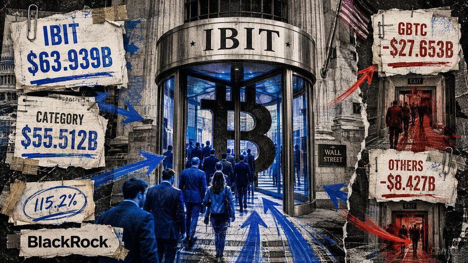
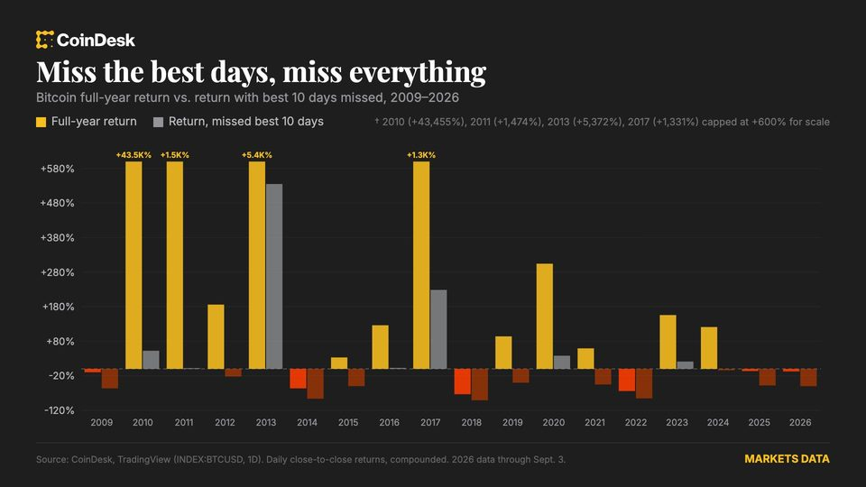
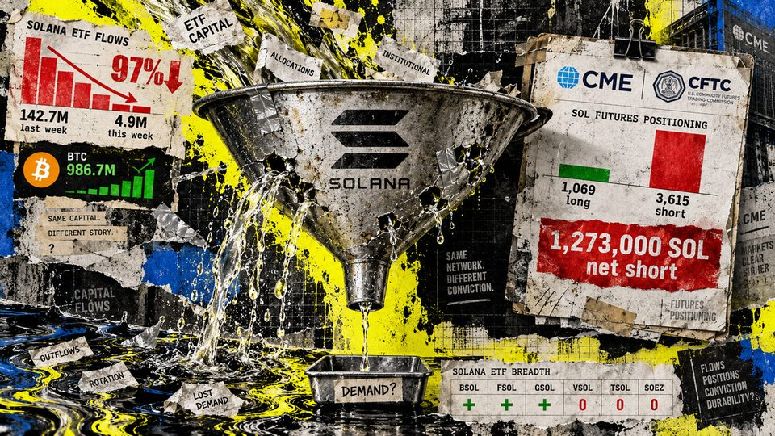
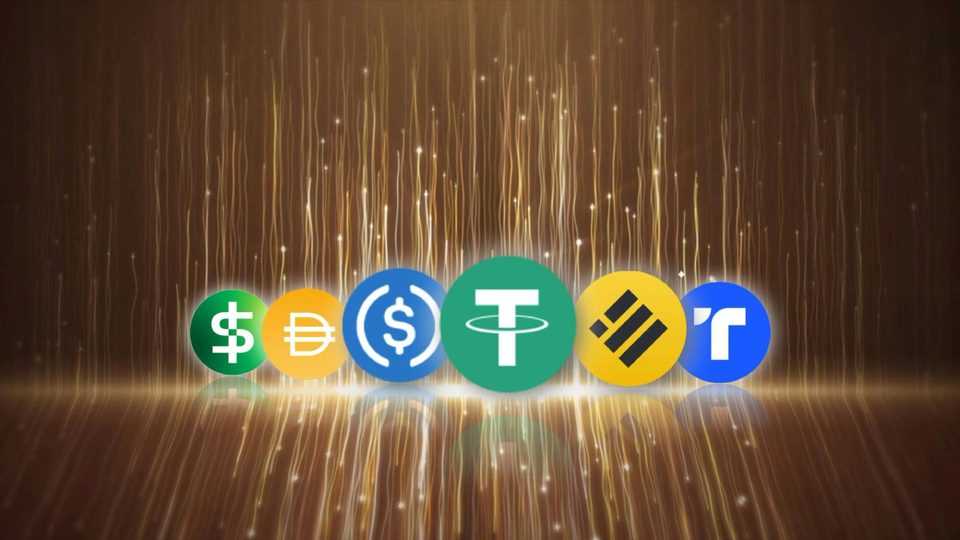
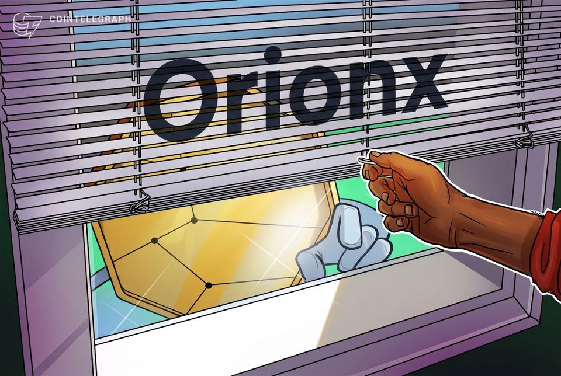

September 6, 2026
Daily headline set with source diversity, cleaned links, and local static rendering.

XRP Gets Another Boost Through Ripple Deal With Florida Athletics
The multi-year deal will place the XRP logo on the field at Ben Hill Griffin Stadium starting this season, extending Ripple's push into college athletics.

Aave crypto lending proposal would let emergency tools freeze markets – but not unfreeze them
The proposal would grant bounded emergency roles now, but the current Risk Steward release cannot invoke their one-way safety calls. The post Aave crypto lending proposal would let emergency tools freeze markets – but...

Better and Coinbase's bitcoin-backed mortgages can reuse borrowers' collateral
Better and Coinbase's bitcoin-backed mortgages can reuse borrowers' collateral

Here's what happened in crypto today
Need to know what happened in crypto today? Here is the latest news on daily trends and events impacting Bitcoin price, blockchain, DeFi, Web3 and crypto regulation.

Stablecoins Won't Scale Without Banks
With a growing number of institutions exploring stablecoins, the bottleneck is regulated infrastructure they can trust.

The $63 billion revolving door carrying the entire US Bitcoin ETF market
Bitcoin's best and newest large buyer has no face, no investment committee, and no public opinion about whether the price looks cheap. It appears near the end of the US trading day as an entry beside an ETF ticker, and...

Timing the bitcoin market is exciting but nearly impossible. Here's why
Timing the bitcoin market is exciting but nearly impossible. Here's why

Satoshi-era Bitcoin wakes after 16 years of dormancy as 600 BTC moves
Whale Alert identified 12 mining rewards totaling 600 BTC that moved after 16 years of dormancy, with the onchain tracking platform finding no connection to Satoshi Nakamoto.
This Crypto Project Just Funded 1,000 Student Loans Entirely On-Chain
The team behind Pencil Finance says the financing supported thousands of Southeast Asian students, but it did not disclose borrower costs, defaults, or investor returns.

Solana's weekly ETF inflows fell 97% while CME funds became less net short
SOL ETFs stayed net positive in the week ending Sept. 4, while a separate Sept. 1 snapshot showed reduced net short exposure. The post Solana’s weekly ETF inflows fell 97% while CME funds became less net short appeared...

Dollar-backed stablecoins can push local currencies lower, Bank of Korea study finds
Dollar-backed stablecoins can push local currencies lower, Bank of Korea study finds

Tether-backed Orionx to shut down after audit flags $7M custody gap
Tether-backed Orionx is permanently closing after an audit found more than $7 million in customer assets had moved to wallets outside its custody.